Equipment
Contents
Equipment#
Ultrasound#
most blocks done with linear transducer (15-6MHz)
for kids/skinny patients, consider using small linear transducer (13-6MHz)
Some deeper blocks require curvilinear
phased array transducer generally not used for nerve blocks, more common for TTE
Small Linear |
Large Linear |
Hockey Stick |
Curvilinear |
Phased Array |
|
|---|---|---|---|---|---|
Image |
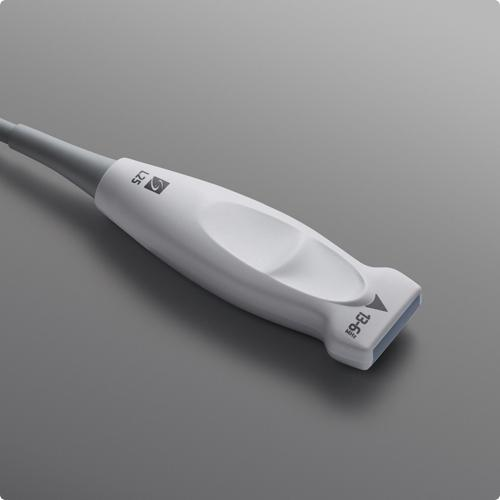 |
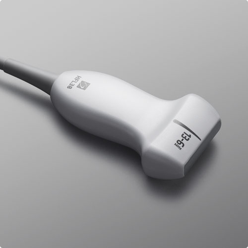 |
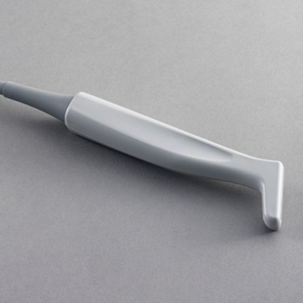 |
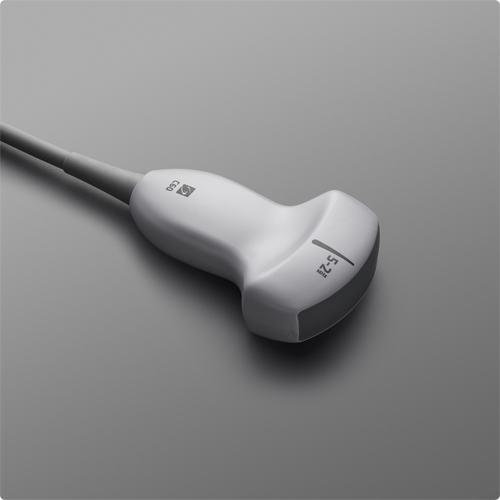 |
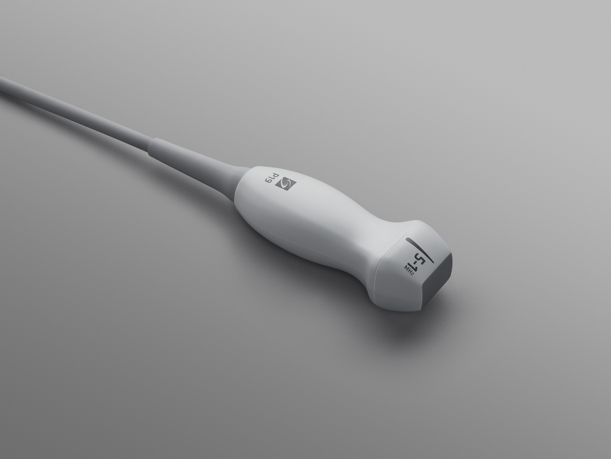 |
Usage |
Peripheral IV, Arterial Line |
Nerve Block, Central Line |
Same as “small linear” |
Abdominal, Deep Structures |
Cardiac |
https://www.sonosite.com/products/ultrasound-transducers
In-Plane vs. Out-of-Plane technique#
most nerve blocks done with in-plane technique
in-plane technically more challenging to align needle tip & target, but can always visualize needle trajectory & tip
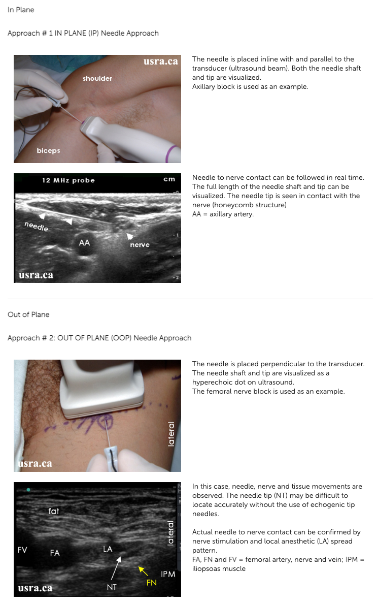
http://www.usra.ca/regional-anesthesia/ultrasound-guided-techniques/needlingtechs.php
Single-Shot Block Needles#
Pajunk Sonoplex#
thin 21G needles
short 50mm vs Long 100mm
more echogenic, can also be used with nerve stimulator
https://pajunkusa.com/products/regional-anesthesia/nerve-blocks/needles/sonoplex-ii/
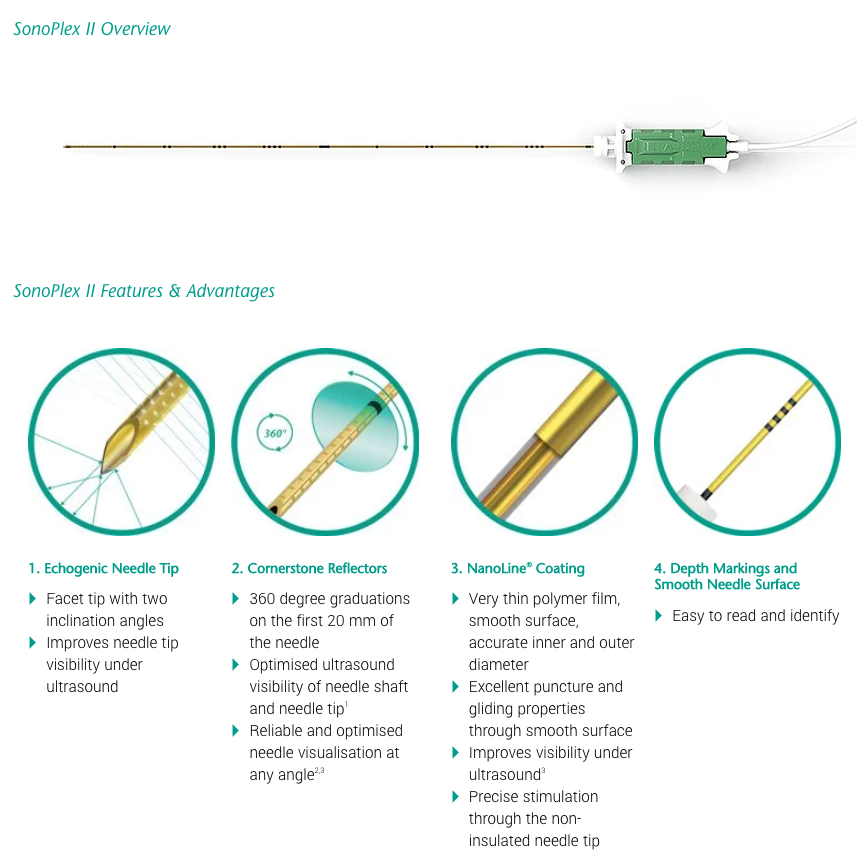
Catheters#
more time consuming / technically complex procedure
catheters known to migrate w/ repositioning
catheters can leak & this is normal
Catheter Over Needle Technique (Pajunk E-Cath)#
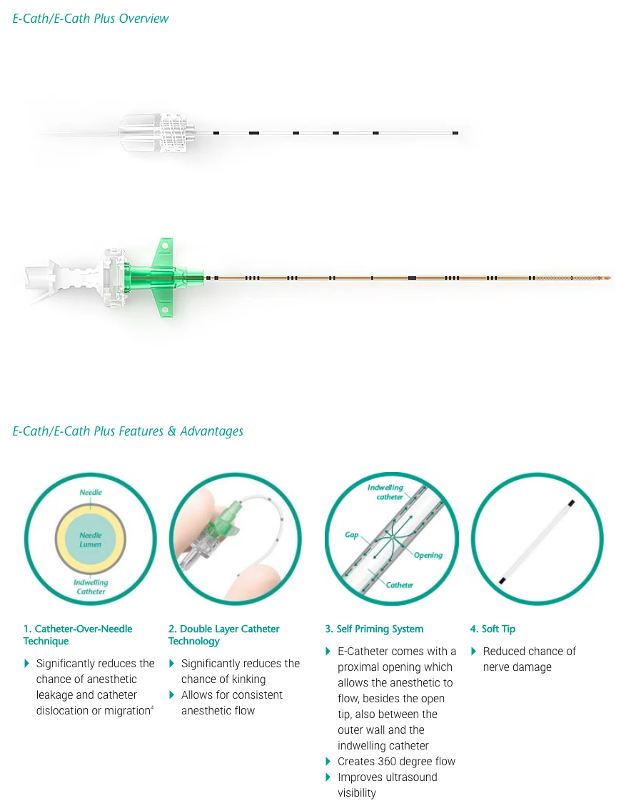
https://pajunkusa.com/products/regional-anesthesia/nerve-blocks/catheter-sets/e-cath-e-cath-plus/
Catheter Through Needle (Sono-Long)#
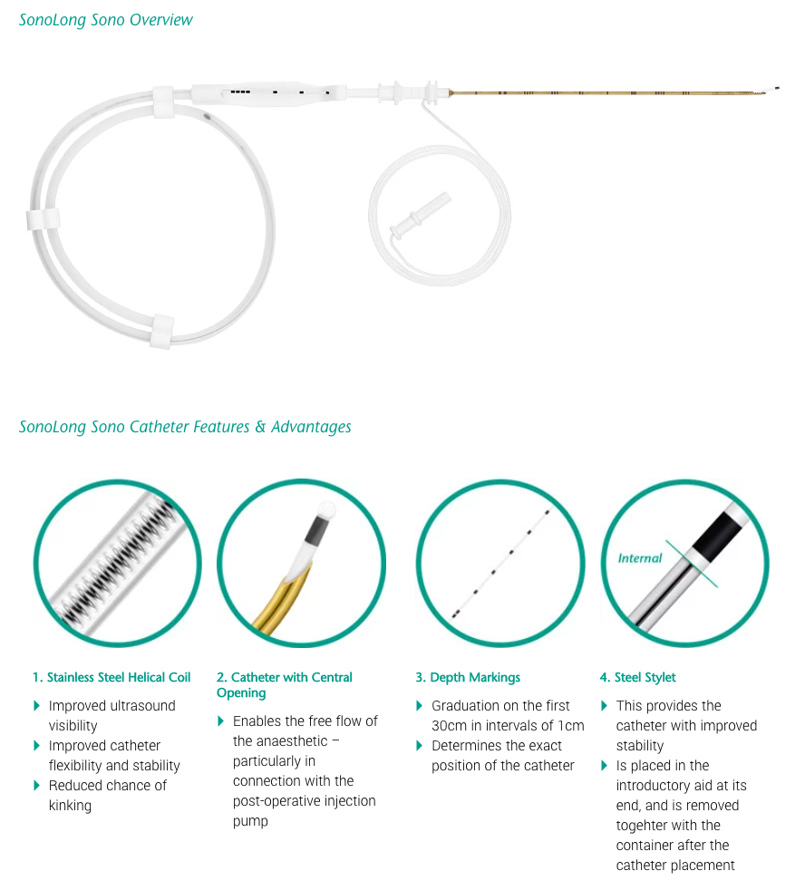
https://pajunkusa.com/products/regional-anesthesia/nerve-blocks/catheter-sets/sonolong-sono/
Catheter Through Needle (Epidural)#
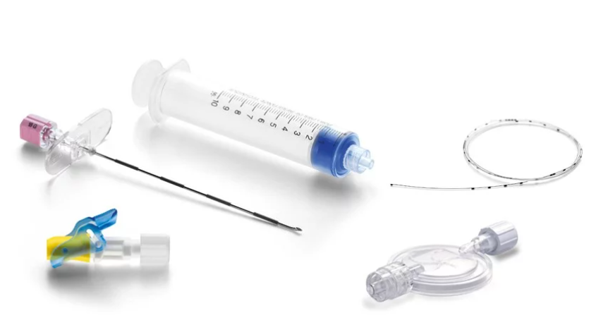
https://pajunkusa.com/products/regional-anesthesia/epidural-caudal/catheter-sets/
Catheter Over Needle vs. Through Needle#
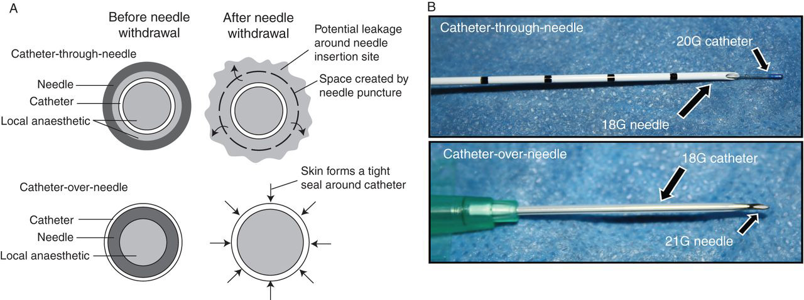
Catheter-over-needle: no gap between skin & catheter, less prone to leaking but still possible. Can seal this with dermabond.
Catheter-through-needle: after needle withdrawn, small gap around catheter & prone to leakage. Can seal this with dermabond.
https://www.bjanaesthesia.org.uk/article/S0007-0912%2817%2930900-5/fulltext